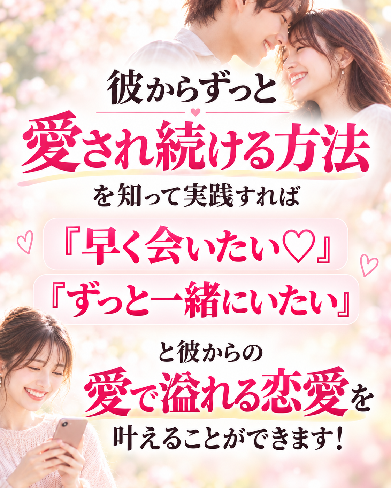
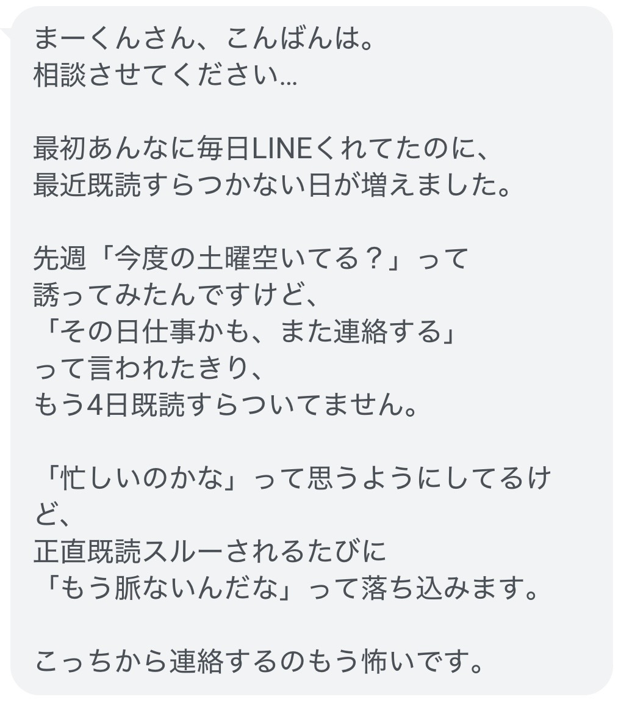
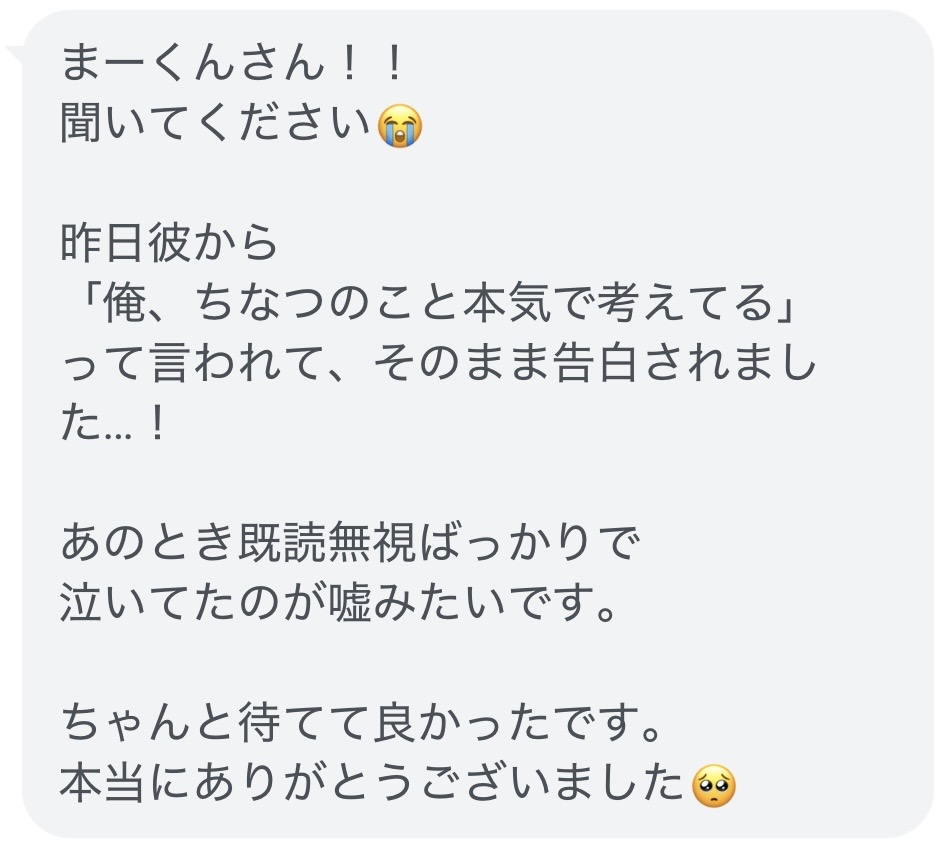
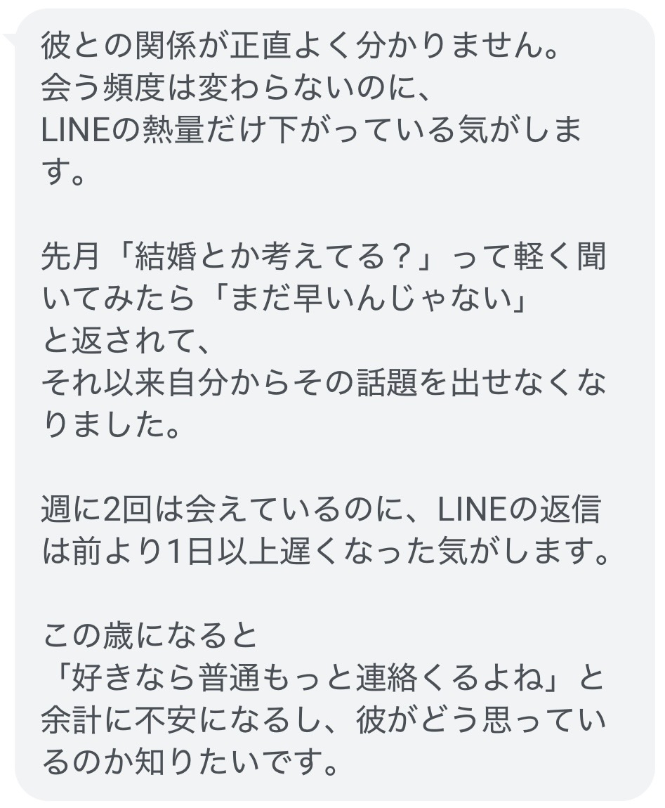
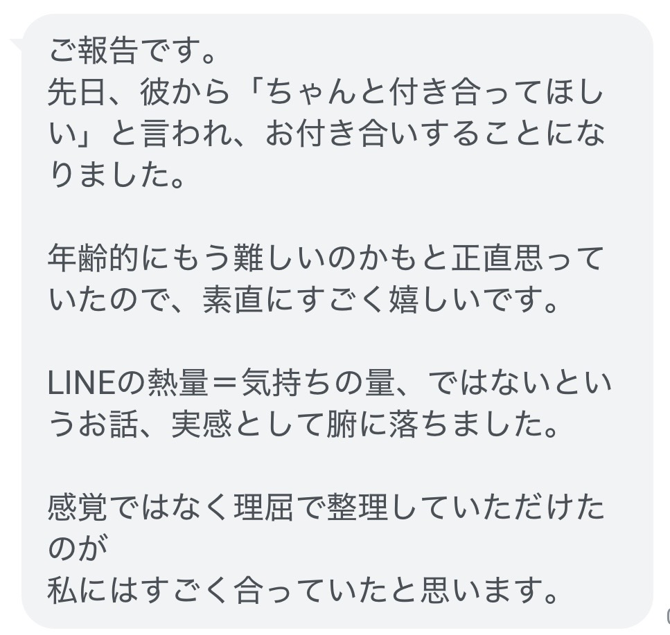
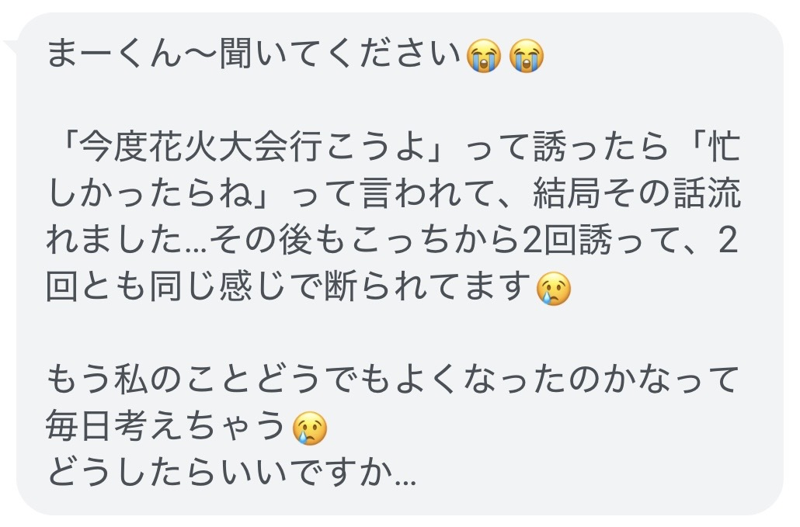
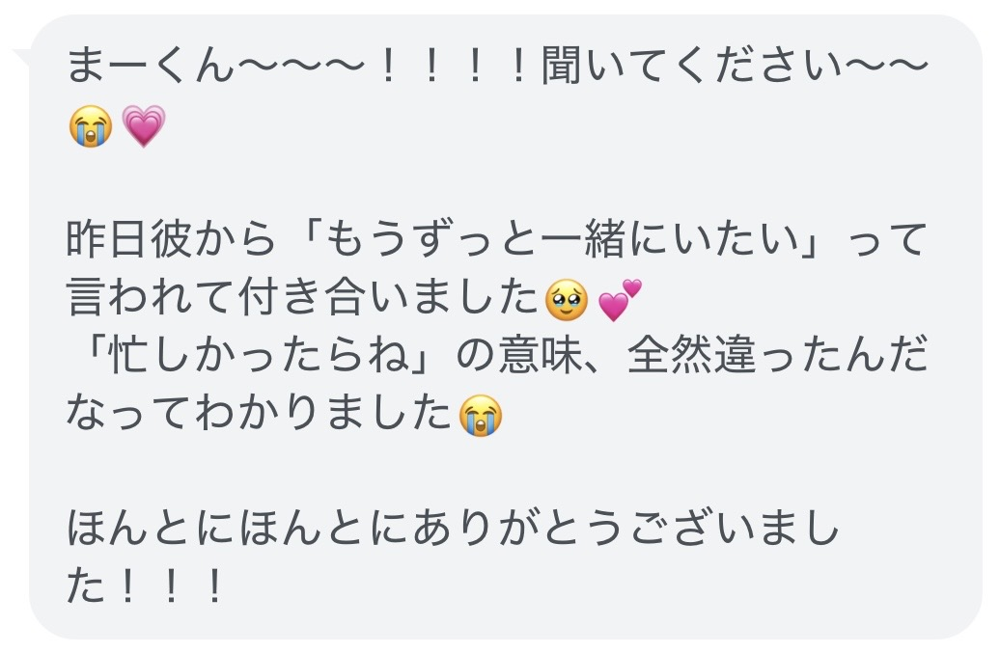
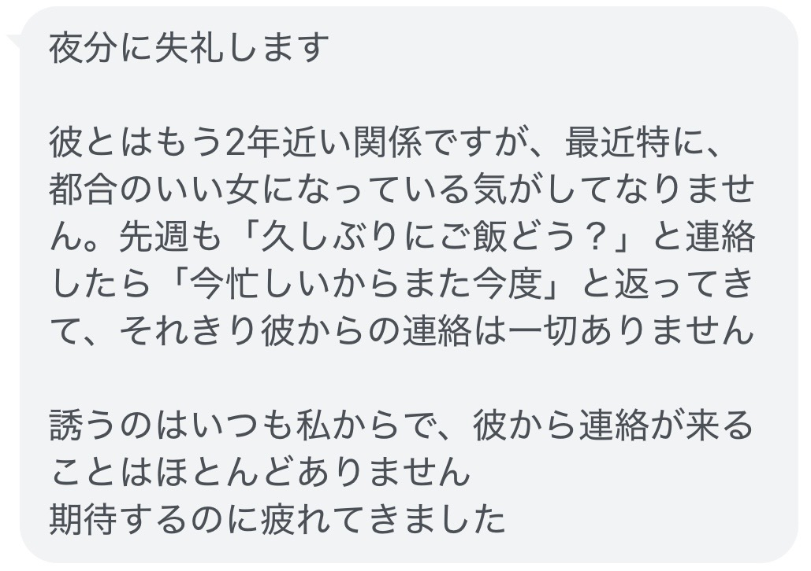
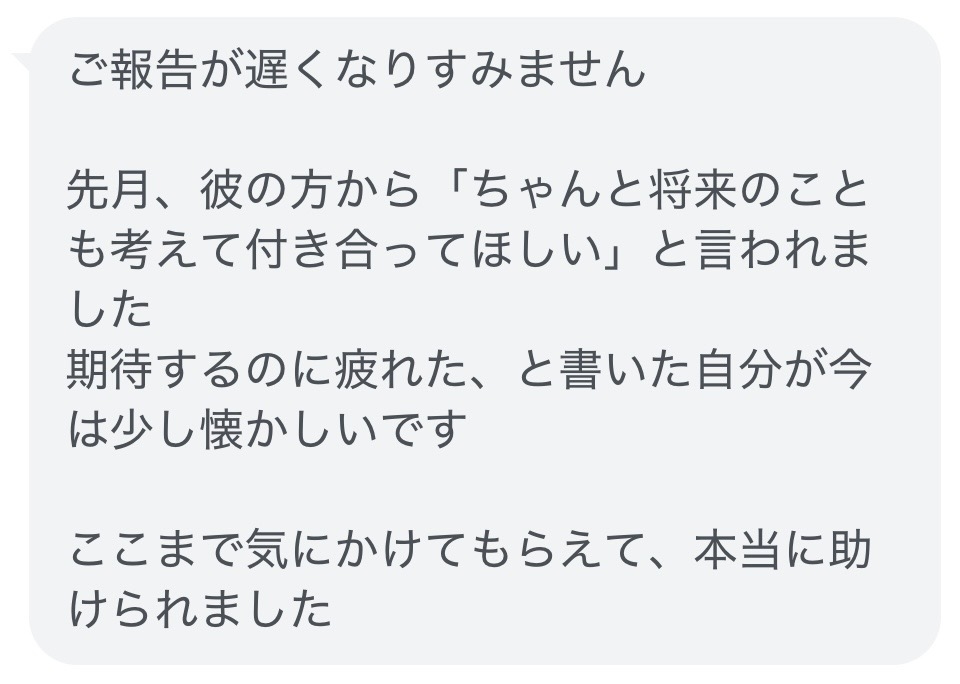

最初は彼の方から
「いつ会える？」って誘ってくれて
LINEも毎日やり取りをして
話も合う。
趣味も似ている。
だから、
初対面が緊張しやすい私でも
あまり緊張せずに話せて
一緒にいてもすごく楽しい。
「このまま付き合えるんじゃないかな」
って期待もしてた。
何度か2人で会ったけど
彼から告白をされない…
「彼は慎重なタイプなのかな？」
「お互いのこともっと知りたいのかな？」
そう思って
最初はそんなに考えていなかったけど
気づけば、LINEをするのも
「会いたい」って誘うのも
私からばっかりになって
彼はあまり積極的じゃない…
そのLINEの返信も
1週間くらい返ってこなかったり
勇気を出して誘ったのも
断られてしまって
「私何かしちゃったかな…」
と不安になっていく
最初は彼も積極的に
アプローチをしてくれてたから
それがなくなったと思うと
「会いたくないのかな…」
「このままフェードアウトしちゃうのかな」
とあることないこと
どんどんネガティブに考えちゃう…
自分から
会いたいって言いすぎて
「こいつめんどくさいな」
「重たいな」
って彼に思われるのも嫌で、
仕事も忙しそうだから
負担もかけたくなくて
私から何もしなかったら
このまま彼からも何もなくて
「本当にフェードアウト
しちゃうんじゃないか」
「これまでの関係も
なかったことになっちゃうのか」
でも、どうしたらいいか
わからない
ちゃんとしたお付き合いを
したこともないから
正直、自信も持てなくて
どうすればいいのかわからない…
友だちのインスタには
彼氏との旅行の投稿が載ってて
結婚をしてる子もいる…
そんな周りに比べて私は
結婚どころか
彼氏も全然できなくて
周りはみんな幸せそうなのに
なんで私はうまく行かないんだろう
デートの誘いを
4日間も既読無視されていた関係から
彼から告白をされ
本命彼女に！

2ヶ月後

LINEの頻度は減って
「もう脈がないかも…」と思ってた関係が
お付き合いして
結婚も視野に！

4ヶ月後

誘ってもいつも
「忙しい」と断られてた関係が
「一緒にいてほしい」と
告白された！

5ヶ月後

2年間ずっと曖昧な関係で
「都合の良い関係」って思ってたけど
「将来のことも考えて
付き合ってほしい」と告白された！

6ヶ月後

これから6日間かけて
この「愛されnote」を通して
彼からずっと愛され続ける方法について
完全解説していきます
「愛されnote」の配信には
僕の想いが詰まってます💪
ありがたいことに
先日お渡しした配布をした方からは
「もっと彼から愛されたいです！」
「もっと教えて欲しいです！」と
といった意見もたくさんいただきました。
そこで、今回！
SNSで僕を見つけてくれて
公式LINEまで追加をしてくださった
そんなあなたのために
これまで250名以上女性を
個別にサポートをしてきた
その経験と知識を
この「愛されnote」に詰め込んだので
公式LINEを追加してくださったときにお渡しした
彼からずっと愛され続ける恋愛マニュアルでは
彼の行動＝気持ちの大きさ
ではないというお話をしました。
「今は彼女を作るつもりはない」
「今は付き合えない」
「結婚願望がない」
こういう行動をされたり
こんなこと言われたりすると
「私は恋愛対象外なのかな？」
「もう会いたくないのかな？」
そう思ってしまったりも
するかもしれないんですけど、
（まだ「愛され続ける恋愛マニュアル」を
読んでいない方は今すぐ戻って先に読んでください！）
実際にどうやって
彼から愛されるようになるのか
今日から6日間かけて
配信していくのですが、
今回のこの企画、
「愛されnote」について
絶対に覚えておいて欲しいことが
3つあります！
毎回の記事にワークがあるので
必ず取り組んでください！
あなたはこれまで
彼との関係を大切にしたくて
「どんなLINEを送ればいいんだろう」
「今は待った方がいいのかな」
「会いたいって言ったら重いと思われるかな」
と彼のことをたくさん考えて
行動してきたと思います。
それなのに
頑張れば頑張るほど
最初のように
自然に話せなくなったり
気づけば自分ばかりが
彼を追いかけるようになってしまう。
なぜ、このようなことが
起きてしまうのか。
それは
あなたに魅力がないからでも
彼を好きになりすぎたから
でもありません。
ただ多くの女性が気づかないまま
彼との距離を遠ざけてしまう
ある原因があります。
この原因を
知らないままでは
男性心理やLINEの送り方を
いくら調べても
また彼の反応が気になり
「これで合っているのかな」
と正解を探し続けることになってしまいます。
明日の愛されnoteでは
彼を大切にしようと
頑張っているはずなのに
なぜ自分ばかりが追いかける
関係になってしまうのか。
その本当の原因を
お伝えします。
今回の愛されnoteでは
ただ記事を読んで「なるほど」と
思うだけではなく
あなた自身の恋愛と重ねながら
内容を受け取ってもらうために
それぞれの配信の最後に
簡単なワークを用意しています。
恋愛の悩みは相手との関係や
これまでの出来事によって
一人ひとり違います。
だからこそ
「私の場合はどうだろう」
と考えながら進めることが大切です。
自分が今
何に不安を感じているのか。
本当は彼と
どんな関係になりたいのか。
一つずつ言葉にすることで
今まで自分でも
気づいていなかった気持ちや
これから変えていくべきことも
少しずつ見えてきます。
6日間の内容を
あなた自身の恋愛を変えるための
時間にしてほしいので
ぜひ毎回のワークにも
参加してくださいね😊